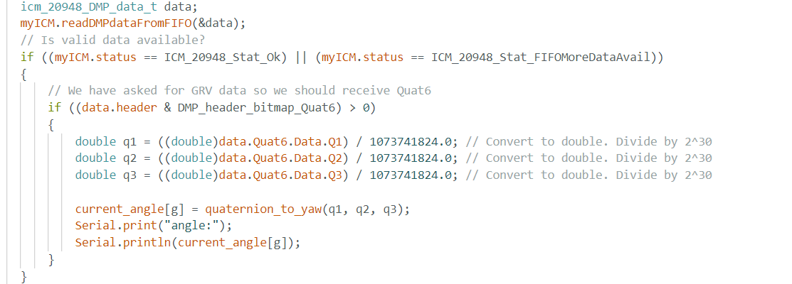
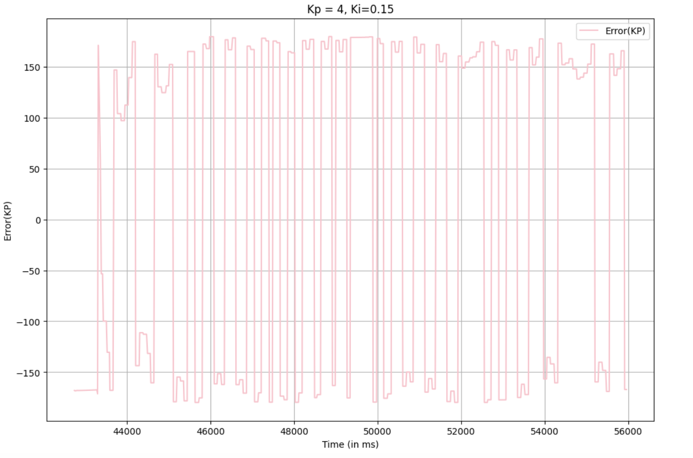

Lab 6 : Orientation Control
Prelab
For this prelab, I did the bascially the same setup that I did for lab 5. I did not create new headers for this lab, rather I implmented into PID.cpp which was then called in to the void loop.
I did create three new cases, orientation_case, send_orientation, and stop_orientation. Code snippets and explanation shown below:
orientation_case
What occurs in this this case is that the frist values turns on and off the Orientation control. The next value controls the speed percent the user wants to implement on the robot.
As of right now, I did not implement speed in this code; however, it would be cool to incorporate in the future. The next value sets the angle that you would like, for example 90 degrees or 0 degrees.
The next three values are the kp, ki, kd that we get to change and send to the robot.
send_orientation
In this image, it calls the function that sends the data collected in the orientation_case and then sent to jupyter notebook.
stop_orientation
A very simple case where it sets the run_orientation_case to zero, which turns of the orientation control.
How the data was processed is shown below from the jupyter notebook code:
Once the data was seperated into their individual arrays it was then processed to be graphed.
DMP: Digital Motion Processor
In Lab 2, I remember being confused about the drift and what it is, but I did observe drift in gyroscope data. This occurs because small measurement errors accumulate over time, leading to inaccurate orientation estimates
when using digital integration.
In order to minimize this issue, I used the ICM-20948’s Digital Motion Processor (DMP), which performs sensor fusion by combining gyroscope, accelerometer, and magnetometer data. This significantly reduces yaw drift and improves accuracy.
According to the the ICM-20948 gyroscope has a maximum rotational velocity range of ±250/±500/±1000/±2000 DPS (degrees per second) for 3-axis gyroscope.
The ±250 is typcially the default of ICM-20948, which is too small for rapid rotations. However, with the DMP automatically uses ±2000 DPS, and this is sufficient for the purposes of this lab.
Despite these improvements, the sensor still has limitations. Factors such as sensor bias, and high-frequency vibrations can introduce noise into the data.
To implement the DMP, I followed the lab instructions provided and modified the necessary code and configuration settings into my code.
I implemented this code below to my loop in my PID.cpp

Then with other classmates and the use of ChatGPT and google, I was able to implement with teh conversion from quaternion to angular yaw. Code snippet below:
In my void setup, I added this code below as per intructions:
Also, I forgot to mention that I uncommented "ICM_20948_USE_DMP" in the ICM_20948_C.h header, and I also included #define ICM_20948_USE_DMP in my ble.arduino.
PI Controller
In the future I would like to fully implment PID into my controller, but I was running out of time so I decided that PI would suffice for now.
Below snippet of my code used for PI:
So, once I had the code as shown above, I frist started focusing on the value for kp that works for my system all while I kept ki and kp 0.
At frist I started using the kp that I found in the previous lab which was kp=.05 but quickly I found that that it did not work for my system given that it gave me small PWM values.
However, I then kept increasing kp until I found that kp=4 was the perfect value given that it gave me better corrections. I set the angle to be zero.
Graphs:
I then added ki, which I started really small given what occured last lab. After testing for quite some time, I saw good performace from ki value of .15 as shown below:
Graphs:

Video:
Sampling
Similar to lab 5, I sampled the rate at which the ICM-20948's DMP is proceessing at around 5ms or 200hz just for the yaw. I did by printing the dt between the current to the old time outside the loop.
5000 Level Task:Windup Protection
Similar to lab 5, since we had a integrator we had to have protection from the integrator to ensure it the error does not grow out of bounds.
The constraint can be seen in my code for PID, I implemented given that I was scared that my car would go crazy like last lab when there was no wind-up protection.
Conclusion
In this lab, I was able to learn more about the IMU and the limitations that it has as well as the implementation that can be done on it.
References: I worked with Sana and Lulu and collaborated to figure out this lab. When we were working,t two of the batteries kept dying even though it was charged for a while (more than 40 mins), and we were left with only
one battery that worked. Which meant the 3 of us shared the hardware but we ran our code separately. Also, I referenced Mikayla, Stephans, and Nila's work for lab 6.